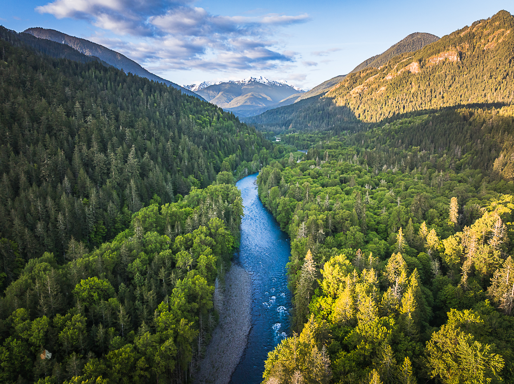

Elwha Legacy Forests
Please help us save these wonders of nature!
Legacy Forests: Forests that are naturally re-grown 2nd growth and not monoculture plantation forests. They contain old growth trees, complex forest canopies & understories, and legacy forest characteristics, including snags (dead standing trees) and large wood on the forest floor. They also have higher biodiversity, higher resilience to forest fires, and sequester more carbon than plantation forests. If left alone, they’re our future old growth forests!
There are ~112,000 acres of unprotected legacy forests on state land in Western Washington and less than 850 acres in the Elwha River Watershed.
We are fighting for permanent protection of these forests!
Our Campaigns – Learn More & Take Action!
Mossy Updates
- Third Tuesday of every month at 5pm – Elwha Legacy Forests Meeting. Join our mailing list for details!
- Sept 2026 – It’s time to celebrate!! We are excited to share that we met our fundraising goal (plus covered all transaction fees) to save the remaining Doc Holliday acres of U5, and all of the acres of U4 and U6!
- 2026 – New campaign for the Salt Creek / Striped Peak legacy forests. Please join our sign-on letter against logging the ‘Tiger Stripes Sorts’ and ‘Birds Eye View’ timber sales along the Striped Peak Loop / Strait Slope Trail near the popular Salt Creek Recreation Area! Check out our Striped Peak proposal highlighting its unique characteristics and how we can protect it.
- Nov. 4, 6:30–8pm at The HUB in Port Angeles (117 N Lincoln St). Learn and celebrate the natural wonders and cultural value of the forests under threat on Striped Peak near Salt Creek Recreation Area. Hear from four incredible speakers (Florence Caplow, Linda Weichman, Barbara Blackie, and Elizabeth Dunne) and watch a short film by John Gussman.
- Nov. 6, 12–1pm PST, via Zoom. Understanding the Earth Law Center, Center for Responsible Forestry, and Earth Economics report: Elwha Watershed Protection: A Call for State Stewardship. What does the 65 page report say, and what does it mean for the Elwha watershed’s future? Join us for a presentation that highlights the report’s key findings, recommendations, and takeaways.
- Nov. 9, 6–7:30pm – virtual. DNR’s Elwha Watershed Study community meeting. Attend to hear about DNR’s proposed natural area boundary and express your support for protecting Elwha Forests.
- Nov. 10, 5:30–6:30pm PST via Zoom – Understanding DNR’s Proposal and How to Make Your Voice Heard. Following the release of DNR’s proposed natural area boundary, this webinar will break down the report’s key findings and offer space to discuss DNR’s proposal. We’ll explain the public comment process so you know exactly how you can engage to help shape the future of the Elwha Watershed.
- Nov. 18, 2–9pm, Mighty Pine Brewing (540 E. 8th St.) in Port Angeles will feature the Elwha Legacy Forests Coalition and Earth Law Center for their Worthy Wednesdays! 15% of total sales goes to support our forests! Meet members of the Coalition who are working hard on the campaign to save the forests near Salt Creek and the Elwha Watershed, enjoy some drinks, and build community around saving forests on the Olympic Peninsula!
Take Action: Support the Lower Elwha Klallam Tribe’s Petition!
Enrolled citizens of Lower Elwha Klallam Tribe have launched a petition calling for protection of the Elwha Watershed “as an interconnected web of life, cultural and spiritual home, sustaining the Salmon, the Orcas, and all of us.” See Earth Law Center’s website for more info on how you can add your name in solidarity!
Donate
The Elwha Forest Fund was created to protect forests within the Elwha River Watershed and Earth Law Center manages it. Thank you!
If you have time, send a quick note to edunne@earthlaw.org so we can track your donation!
Documentary!
Watch the Earth Law Center’s award winning 20 minute documentary Last Stand: Saving the Elwha River’s Legacy Forests featuring the work of the Elwha Legacy Forests coalition to stop the “Power Plant” timber sale and protect the Elwha River Watershed.
The film includes Dave Upthegrove, our new WA State Public Lands Commissioner along with local officials — Port Angeles City Councilmember LaTrisha Suggs and City Manager Nathan West. Upthegrove, who visited the “Power Plant” timber sale with coalition members, shares his opposition to logging legacy forests near the Elwha River.
Find out more and support the Last Stand documentary on social media: Facebook · Instagram
Amazing Legacy Forests on the Olympic Peninsula
These WA State DNR forests are scheduled to be auctioned off to be logged or have been saved by the community’s hard work! The page for each forest has more photos, videos and action you can take to help save it!
Zoom in on the interactive Google Map to see where the DNR plans to log legacy forests in the Elwha River Watershed. Each color represents a different legacy forest timber sale and the large blue outline is the Elwha River Watershed.
What is a Legacy Forest?
They are naturally regenerated 2nd growth forests and aren’t monoculture plantation forests, generally harvested prior to 1945. They contain large diameter trees, complex forest canopies & understories, biodiversity and old forest characteristics, including standing snags and large wood on the forest floor.
We should not be logging these critical resources. According to analysis by Legacy Forest Defense Coalition, just 13.2% of DNR managed lands in Western Washington are home to legacy or old growth forests and of that, roughly half are available for timber harvests. In the next 5 years (between 2024–2029), at least 17,000 acres of legacy forest are scheduled for logging!
Conserving mature and old-growth forests is one of the most affordable and effective tools for fighting climate change. No human-made technology can match big trees for removing and storing climate pollution. If they are logged, most of that pollution is quickly released into the atmosphere and it takes many decades or centuries for younger trees to recapture it.